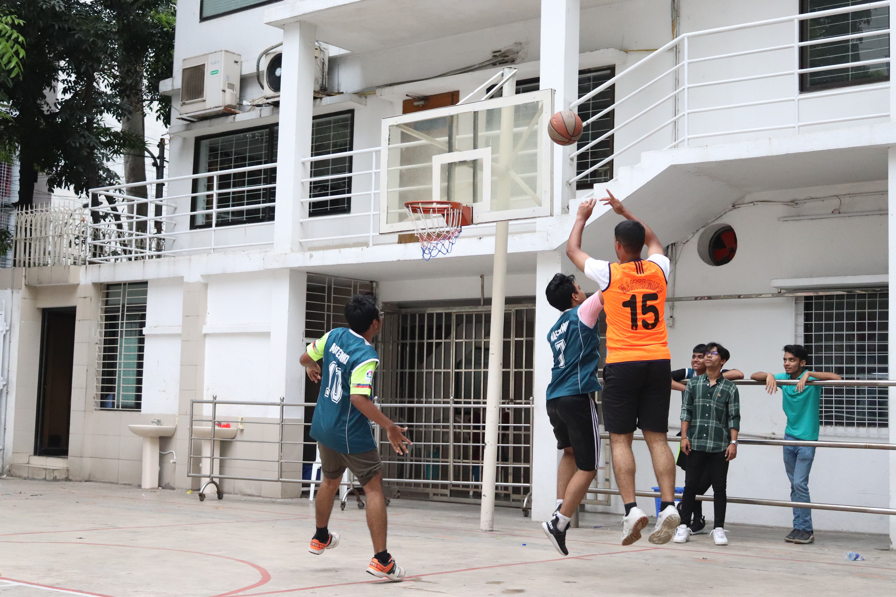

Strategic, driven leader shaping future industries.
Welcome to my professional online portfolio. I am an analytical and system-focused student and administrator, committed to leveraging strategic operations to guide family ventures and national developmental frameworks.
Monash University
Higher Education Coursework — Current Student
Mastermind School
Secondary & Higher Secondary Certificate Track
Vintage Engineering Limited
HR Department Executive
| Software Platform | Proficiency Tier |
|---|---|
| Google Chrome Ecosystem & Web Frameworks | Advanced (Execution & Interface Deployment) |
| HTML5 & CSS3 Architecture | Intermediate (Structural Design & Layouts) |
| Microsoft Excel / Data Management Tools | Intermediate (Statistical Logs & Pivot Diagnostics) |
My near-term objective is to step into our family business, Vintage Engineering Limited, driving modernized agricultural infrastructure projects that are central to the economy of Bangladesh. Concurrently, my long-term trajectory targets specialized contributions inside national law enforcement frameworks and the defense sector.
I analyze systemic behavior, actively tracking patterns across human psychology, local Bangladeshi politics, and regional history. During personal hours, I follow competitive soccer closely.
I used Gemini to clean, organize, and format the structure of this landing page to meet the strict rubric standards. My exact conversational inputs and generative adjustments can be verified via my Generative AI Session Record Link.
A detailed record of tactical leadership, collaborative community actions, and creative milestones.
Since the age of 16, I have stepped into highly challenging settings to manage public actions, large-scale sports tournaments, and community assemblies. Handling these programs demanding strict timeline management, volunteer deployment, and tactical security planning under fluid, high-stress conditions. These events refined my real-time crisis communication, negotiation abilities, and critical problem-solving skills.
Managing community movements required setting up rapid communications systems, arranging public safety procedures, and keeping diverse groups aligned on strategic outcomes. This practical experience shaped my ability to make quick, informed decisions in unstable environments, building skills that transfer cleanly into executive corporate leadership and large-scale public administration roles.

My foundational project management competencies were sharpened through high-profile institutional platforms. Directing assignments for the Mastermind Entrepreneur's Enclave and the Mastermind Foodfest involved tracking vendor positions, processing logistics, and overseeing crowds. This work helped me learn how to run multi-tier budgets and lead teams toward clear goals.
Away from administrative duties, I explore systemic commentary by writing rap verses. This artistic pursuit requires a sharp understanding of speech cadence, metaphor, and concise communication. Deconstructing heavy social issues into rhythmic prose keeps my critical presentation skills sharp, helping me communicate important ideas quickly and persuasively in professional environments.
My future projects focus on integrating advanced operational frameworks with industrial agriculture systems at Vintage Engineering Limited. The ultimate goal is to build automated supply systems and management structures that directly support regional agricultural production throughout Bangladesh.
I used Gemini to synthesize my operational project logs into categorized grid sections and refine the prose. The full blueprint can be reviewed via my Generative AI Session Record Link.
A comprehensive analysis of diagnostic metrics, structural traits, and operational vectors defining executive behavior.
"Your time is limited, so don’t waste it living someone else’s life." — Steve Jobs
As an ENTJ (Commander), you are a natural-born leader with an unparalleled drive to turn your visions into reality. Your strategic mind excels at seeing the big picture, identifying long-term goals, and devising efficient plans to achieve them. You possess a rare combination of confidence, charisma, and decisiveness that draws others to you and inspires them to follow your lead.
Your approach to life is characterized by ambition and a relentless pursuit of success. You have an innate ability to organize people and resources, creating order out of chaos and transforming abstract ideas into concrete results. Your sharp intellect and rational decision-making skills allow you to handle complex situations with ease, always keeping your eye on the ultimate objective.
You get energized by social interaction and tend to openly express your enthusiasm and excitement.
You’re highly imaginative and open-minded, focusing on hidden meanings and distant possibilities.
You focus on objectivity and rationality, putting effectiveness above social harmony.
You’re organized, decisive, and thorough, valuing structure and planning over spontaneity.
You’re self-assured, even-tempered, and resistant to stress, refusing to worry too much.
Your direct communication style is both a strength and a challenge. While it enables you to express your thoughts clearly and persuasively, it can sometimes come across as blunt or insensitive to those around you. You value efficiency and competence above all else, which can make you impatient with those who don’t meet your high standards.
You thrive in environments that challenge you and provide opportunities for growth and leadership. You’re not content with the status quo and are always looking for ways to improve systems, processes, and people. Your ability to see potential and drive change makes you an invaluable asset in any organization or group, but it also means you may struggle with mundane tasks or situations that don’t align with your grand vision.
Your career is more than just a job – it’s a platform for you to exercise your leadership skills and make a significant impact. You’re naturally drawn to roles that allow you to strategize, make important decisions, and guide others towards a common goal. Whether you’re running your own business or climbing the corporate ladder, you’re always aiming for the top, driven by an unwavering belief in your abilities and a desire to leave your mark on the world.
However, your career path isn’t without its challenges. Your preference for big-picture thinking and strategic planning may cause you to overlook important details or become frustrated with day-to-day operations. Learning to appreciate and manage the smaller aspects of your work, while also delegating effectively, will be crucial for your long-term success.
Your journey of personal growth centers around balancing your natural strengths with developing new skills that may not come as easily to you. One of your primary challenges is developing emotional intelligence – learning to recognize and respond to the feelings of others, as well as understanding and managing your own emotions. This involves cultivating empathy and patience, which can sometimes feel at odds with your efficiency-driven nature.
Another key area for development is learning to embrace flexibility and delegate control. While your confidence and decisiveness are valuable assets, they can sometimes lead to rigidity or an inability to trust others with important tasks. By working on these aspects, you can become an even more effective leader capable of balancing professional and personal spheres with greater satisfaction.
In your relationships, whether romantic, familial, or friendships, your direct and honest approach creates a foundation of trust and clarity. You value loyalty and commitment, and when you find someone who meets your high standards, you’re willing to invest fully. Your natural charisma and confidence can make you an exciting partner or friend, always ready to tackle challenges together.
However, relationships may face challenges due to your intense focus on goals, which can overshadow emotional needs. Learning to express feelings openly and making time for genuine emotional connections is crucial. By active cultivation of empathy, you can build deeper, more fulfilling connections.
I used Gemini to translate my comprehensive personality diagnostic scores and descriptive metrics into formatted interactive tracking bars and professional analytical layout components. The parameters can be reviewed via my Generative AI Session Record Link.